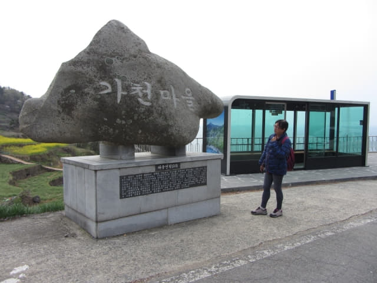
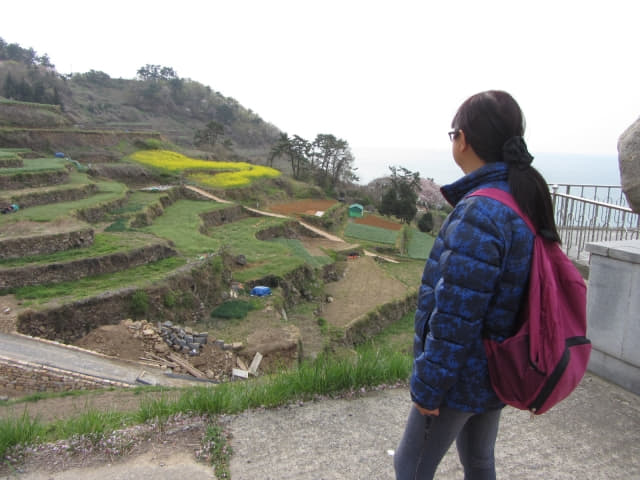
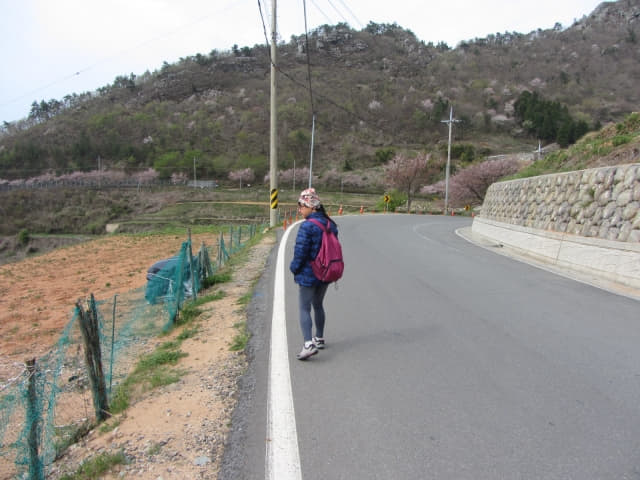

巴士於早上八時五分緩緩駛離南海公用客運站, 沿途都是田園景色, 穿過大大小小好像隱世的村落, 於早上九時抵達加川巴士站, 行車時間約一小時。下了車, 巴士站旁豎立了一塊巨型的石碑, 上面刻了「가천마을」四個大字, 來到南海加川村了。
南海郡加川梯田村 (가천 다랭이마을 Gacheon Daraengi Village)
南海郡加川梯田村位於海拔488米的雪屹山山麓、綿延不絕的海岸絕壁間的山坡上, 是四百多年前韓國勤勞農民征服大自然, 依山開闢而成的村落, 依山傍海, 風景十分秀麗。加川梯田村原名為加川村, 因有著超過108層的壯觀石築梯田而聞名, 故也稱為加川梯田村, 並獲選為最具韓國風情景色的梯田。
加川梯田村位於南海的南邊, 北面的天然屏障阻擋了北面的冷風, 所以冬天很少下雪, 是韓國最早春耕收成的村莊。加川梯田村面對大海, 海風有助防止害蟲滋生, 最適合種植有機農作物。
立即走到崖邊俯瞰山下景色, 只見層層疊疊的梯田, 從海邊盤繞而上, 彎彎曲曲分佈於山谷中的坡地間, 曲線十分優美, 腳下的便是加川村, 因以壯觀梯田而聞名, 故也稱為加川梯田村。


南海加川梯田村 巴士站觀景台
加川巴士站旁是一個觀景台, 可以俯瞰加川梯田村。對於匆忙的旅客, 這裡絕對可以滿足他們到此一遊的要求。
加川巴士站觀景台上有一幅加川梯田村的遊覽地圖。

南面路 俯瞰加川梯田村全景最佳地點 – 巴士站步行往加川梯田村西南面出入口
從地圖上所見, 從巴士站開始, 沿著馬路 (南面路 남면로) 有多條步道都可以進入加川梯田村的。不過, 我們選擇了西南面最遠的一個入口, 即是地圖上右上面黃色的道路, 這樣便可以繞著南面路從不同角度欣賞加川梯田村, 然後才進村遊覽。因南面路實際就是俯瞰加川梯田村的最佳步道, 真的可以稱為「加川梯田村觀景道路」。
Okay! 出發啦! 按出發前訂下的計劃, 我們會在加川梯田村玩個半鐘, 然後在早上十一時十分前返回加川巴士站這裡等候, 乘巴士往二東面, 然後轉乘另一部巴士往南海郡對岸的泗川市。其實不清楚什麼時間會有巴士, 都是估計的, 不要想那麼多了, 還是好好的遊覽完加川梯田村才算吧!
離開加川巴士站, 沿南面路向前走, 其實等於繞著加川梯田村走, 沿途都可以看到山坡下的村落。
可以清楚看到, 整個加川村都是沿著海邊一帶的山坡上建設, 如果不是修建了這道路, 這裡便是傳說中的世外桃源。
南海加川梯田村 最難走的出入口步道
走了一會, 左邊有一條崎嶇、破爛、陡斜的步道, 是其中一條進入村莊的步道, 也是最難走的一條步道, 相信沒有旅客會選擇這步道吧! 但我們為了趕時間, 竟然選擇這難走步道離開加川梯田村!
地圖上標記的地方就是加川梯田村最難走的出入口步道。
繼續向前走。
南海加川梯田村 出入口
只走了一會, 在轉彎處又有另一個南海加川梯田村的出入口 (地圖上綠色路線), 看來汽車可以直接駛進村內, 適合喜歡速食的旅客。

沿南面路觀景步道繼續向前走。

遠處是一望無際大海, 腳下是加川梯田村, 風景十分優美。

前面又有兩條進入加川梯田村的陡斜道路, 我們稍後便是從最遠的那條彎彎曲曲道路入村。
南海加川梯田村 中央出入口
在前面拐個彎, 左邊又是另一個南海加川梯田村的出入口, 同樣汽車可以直接駛進村內的。哈哈~~~ 看來只有我們兩個是用雙腳進村的旅客。因為出入口位於加川梯田村中央的位置, 我就稱之為「加川梯田村中央出入口」。

{kind=link}
{kind=link}